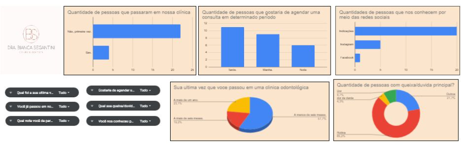

.jpg)
Suporte Técnico em TI | Desenvolvedor Júnior | Front-End & Back-End | Infraestrutura
Suporte Técnico em TI | Desenvolvedor Júnior | Front-End & Back-End | Infraestrutura
Sou formado em Análise e Desenvolvimento de Sistemas pela Faculdade ENIAC e atuo na empresa Olos na área de Tecnologia da Informação. Tenho experiência com suporte técnico, Help Desk, Service Desk e operações em Data Center, além de conhecimentos em infraestrutura de TI e desenvolvimento de sistemas. Com 20 anos, sou um profissional dedicado, curioso e em constante aprendizado, buscando sempre aprimorar minhas habilidades técnicas e oferecer soluções que contribuam para a estabilidade e eficiência do ambiente tecnológico. Gosto de trabalhar em equipe, resolver problemas de forma prática e aprender novas tecnologias que ampliem meu desempenho na área.
Empresa: Olos | Fev/2025 - Ago/2025
Atuei como estagiário de Tecnologia da Informação, realizando formatação e manutenção de notebooks, instalação e desinstalação de aplicações corporativas e suporte técnico aos usuários. Também desempenho tarefas voltadas à segurança da informação, participo de atividades em data center e apoio na administração de ambientes em nuvem Microsoft Azure e Active Directory (AD). Busco constantemente aprimorar meus conhecimentos e contribuir para a eficiência e segurança da infraestrutura de TI.
Empresa: Olos | Ago/2025 - Presente
Atuo na área de TI, realizo formatação e manutenção de notebooks, instalação e remoção de softwares, além de acompanhar tarefas de segurança e auxiliar em atividades no data center. Tenho contato com plataformas como Microsoft Azure e Active Directory (AD), desenvolvendo habilidades práticas em infraestrutura e suporte técnico. Estou sempre em busca de aprendizado e crescimento profissional no setor de tecnologia.
Desenvolvi um jogo educativo sobre reciclagem utilizando a plataforma Construct 3, no qual o personagem principal coleta diferentes tipos de lixo e os deposita corretamente nas lixeiras correspondentes. O objetivo do projeto foi promover a conscientização ambiental por meio da gamificação, aplicando lógica de programação e design interativo.
Criei um painel interativo em Microsoft Excel para uma clínica odontológica, com o intuito de facilitar o acompanhamento de dados como agendamentos, pacientes, atendimentos e indicadores de desempenho. O projeto envolveu o uso de fórmulas, tabelas dinâmicas e gráficos para análise visual e tomada de decisão.
Desenvolvi o site institucional da hamburgueria Chula Burguer, utilizando HTML e CSS para criar uma interface moderna, responsiva e de fácil navegação. O foco do projeto foi trabalhar conceitos de front-end, estruturação de conteúdo e identidade visual da marca.
Como extensão do site da Chula Burguer, implementei uma tela de login funcional para aprimorar a experiência do usuário e aplicar práticas de design e usabilidade. O projeto reforçou meus conhecimentos em estruturação de formulários e layout responsivo.
Desenvolvi o site oficial do clube automotivo DMG Low Family, voltado para entusiastas de carros rebaixados e personalização automotiva. O objetivo do projeto é divulgar o clube, seus produtos, eventos e canais de contato de forma moderna e acessível. O site foi criado utilizando as linguagens e tecnologias HTML5, CSS3, Tailwind CSS e JavaScript, aplicando conceitos de responsividade, interatividade e design visual atraente.
Gostou do meu trabalho? Entre em contato comigo!
Enviar mensagem